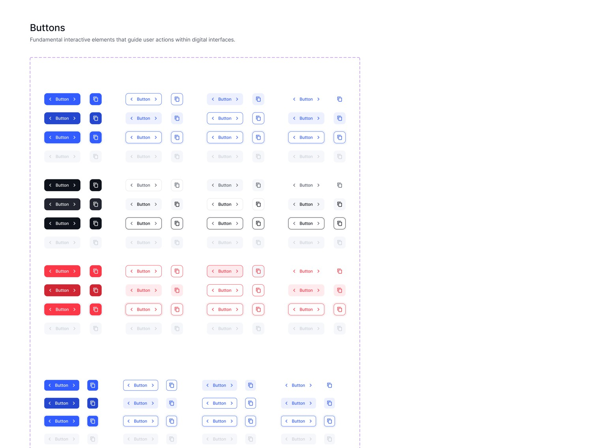
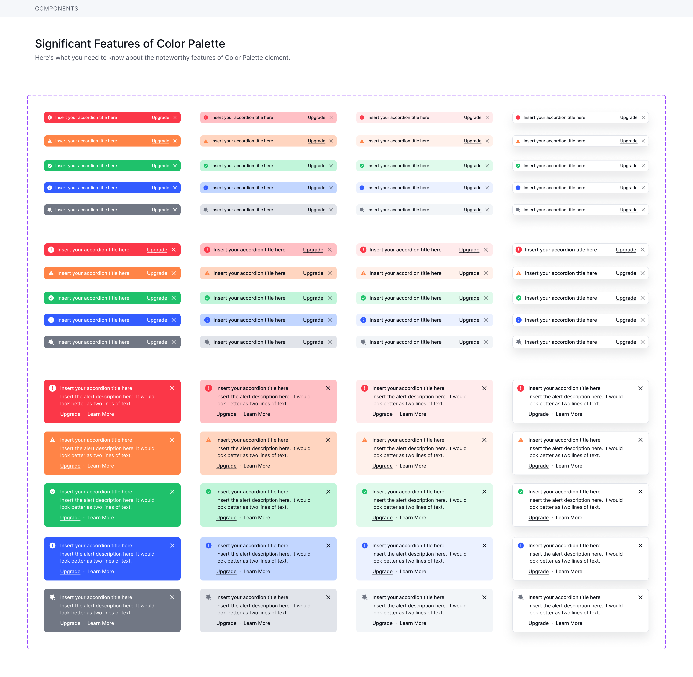
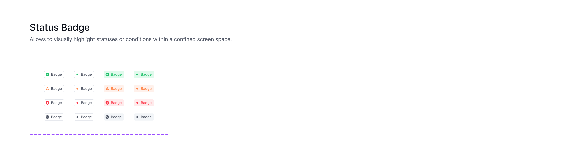
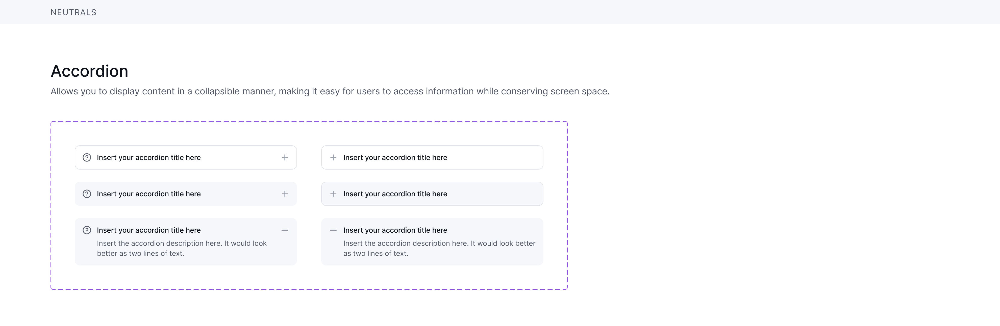

Uncoordinated styles
Approach: document shared palette families and shade steps.
Expected benefit: more consistent color selection.
DESIGN SYSTEMS / FIGMA ARCHITECTURE
Creating consistency, reusability and clarity across interface foundations and components.
A structured collection of actual Figma references spanning color scales, typography, buttons, status messages, badges, accordions and radius rules. The focus is not just visual polish—it is how shared rules can support a growing product.

01 / INTENT
The design-system references organize decisions that would otherwise need to be made repeatedly, screen by screen. The principles below describe the architectural intent—not measured product results.
Approach: document shared palette families and shade steps.
Expected benefit: more consistent color selection.
Approach: keep button, alert and badge treatments together.
Expected benefit: easier pattern reuse.
Approach: define type, radius and interaction treatments.
Expected benefit: more predictable screens.
02 / SYSTEM ARCHITECTURE
This is the design-system architecture I work toward. The provided screenshots verify foundations and component examples; they do not establish a live coded component library or automated token export pipeline.
Colors, typography and radius examples establish shared visual conventions before screens are assembled.
Verified in the supplied Figma screenshots.Shared tokens and Figma Variables can centralize visual values and support systematic updates. The screenshots include palette references but do not clearly expose all variable names, aliases or collection settings, so no undocumented token IDs or mappings are claimed here.
03 / COMPONENT THINKING

The component sheet groups multiple button treatments and repeated states in one place, supporting consistent decisions across workflows.

Different message treatments are documented together, making severity and hierarchy easier to compare.

Badge variations provide a shared reference for communicating states in dense product interfaces.

A documented collapsed/expanded pattern helps keep supplementary content accessible without crowding the page.
04 / ORIGINAL FIGMA REFERENCES
Browse the real screenshots and select annotations to understand the decision behind each foundation or component. Tap the image to inspect it at its original resolution.
05 / SCALE & HANDOFF
Shared reference sheets reduce the need for ad-hoc visual decisions across screens.
Documented button, badge, message and accordion treatments make reuse easier.
Coherent foundations provide a stronger starting point when new workflows are introduced.
Clear foundations make reviews and future updates more predictable.
Choose documented patterns, apply shared foundation rules, and avoid creating a near-duplicate for every new screen.
Use the visual specifications for component treatment, spacing intent and interaction-state expectations during handoff.
Outcomes above are intended design-system benefits. No time-savings percentages, rollout adoption metrics, or undocumented automation claims are asserted.
LET'S CONNECT
Request access to the original design system or explore the rest of my product work.
05 / CONTACT
Let's connect and create something meaningful.